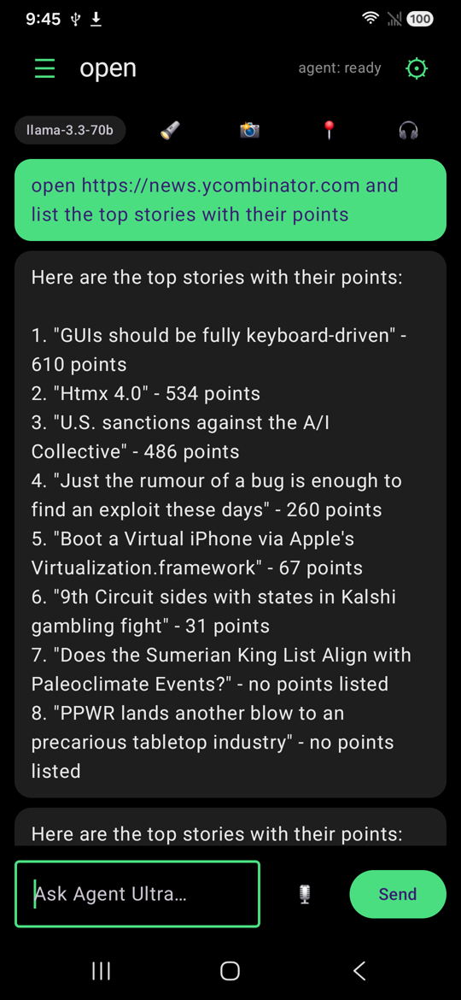

Not a chat app with a cloud API behind it. A model is loaded into memory on the handset and drives the real thing — the browser, the settings, other apps' screens. Airplane mode, Wi-Fi off, no SIM: it still answers, and it still operates the phone.
A stronger model does the task one time. Something outside the app checks the phone to see whether it really worked. If it did, the steps are kept. After that a cheaper model gets the same job with different details — another file name, another time — and the app plays the steps itself.
AndroidWorld is Google's public phone benchmark. It sets the task and checks the phone afterwards. 33 of its simpler tasks, picked by rule, with details it had never seen: 8 done without the kept steps, 13 with them. The stronger model that taught it scores 13 and 14.
No model was changed. What it learned is a short list of steps in a plain file. On most jobs it has steps for, the model picks nothing — the app does the taps, in 14 to 26 seconds.
The memory that keeps the steps lives on my laptop, beside an emulator. The app you download can play steps; nothing on your phone writes them yet. And 20 of those 33 tasks still fail either way.
You read a screen here, retype it there, tap through five flows to do one thing you meant. Agent Ultra is the layer that turns those apps into tools. You stop operating screens. You state intent.
Pick a model that fits your phone and it downloads on demand. Nothing is bundled — the app itself is 8.4 MB. With no network it keeps working.
Not the first forty labels. It scrolls the whole thing and returns structured items, so a price stays attached to its own product rather than the nearest line.
Pay, buy, send, delete, confirm — those pause and ask you, showing the exact control. An unanswered prompt is a refusal, never an approval. In 2.4 the question sits on top of the app you're in, so the app keeps its place while you decide.

Deliberately shown at the level of what each layer is responsible for. The model is never trusted to be the thing that keeps you safe — a program is.
This is the part worth reading, and it is not a disclaimer — it is the design.
Agent Ultra did not appear from nowhere. Three earlier projects each solved a piece of it, and each is public and checkable.